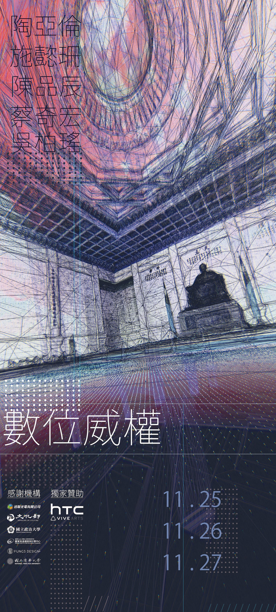
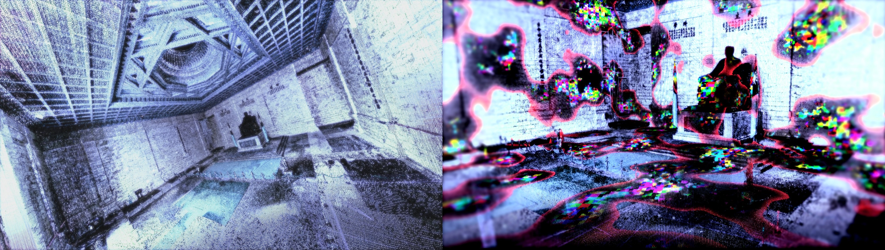
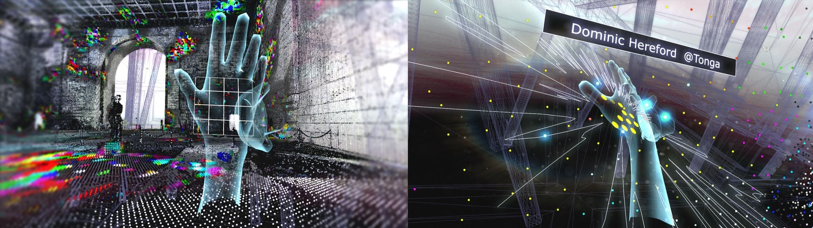
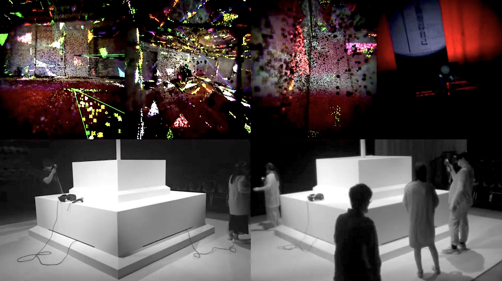

Interactive VR
Point-Cloud Reconstruction
Web-Based Visualization
Critical Design
Real-Time Streaming
Technological Totalitarianism investigates how authoritarian structures persist and mutate through digital systems. The work reflects on a world where ubiquitous sensors, biometric identification, and platform governance produce a new form of political visibility—one in which individuals are rendered fully transparent, and freedom is eroded through constant observation.
By reconstructing iconic authoritarian architectures in VR, the project examines how collective memory, ideology, and power are encoded into spatial forms. Users enter these mirrored political spaces not merely as spectators but as participants whose movements, coordinates, and presence contribute to the evolving virtual environment. The result is a critical exploration of how technology extends authoritarian control into virtual space, transforming surveillance from an external force into an internalized condition.
 High-resolution laser scans of authoritarian monuments—such as Taipei’s Chiang Kai-shek Memorial Hall and Spain’s Valley of the Fallen—were captured using FARO 3D scanners (accuracy up to 1 mm; ~976,000 points/sec), generating detailed point-cloud datasets. These scans were reconstructed into textured 3D environments via Contex Capture Center and refined in Cinema 4D, with additional lighting, sculpting, and texture repair.
The virtual architecture was then imported into Unity to build a multi-user VR system capable of supporting 5–10 concurrent participants. On the web interface, remote viewers could submit their real-world GPS coordinates, which were mapped onto corresponding point-cloud nodes inside the monument. This allowed global participants to “occupy” the authoritarian space collectively, creating a living data sculpture shaped by location, movement, and temporal flux.
Inside VR, viewers navigate distorted architectural geometries where virtual and physical coordinates collide—producing a felt sense of compression, disorientation, and political tension. The installation exposes how technological infrastructures rewrite spatial agency and reflect the logic of digital authoritarianism through immersive interaction.
 